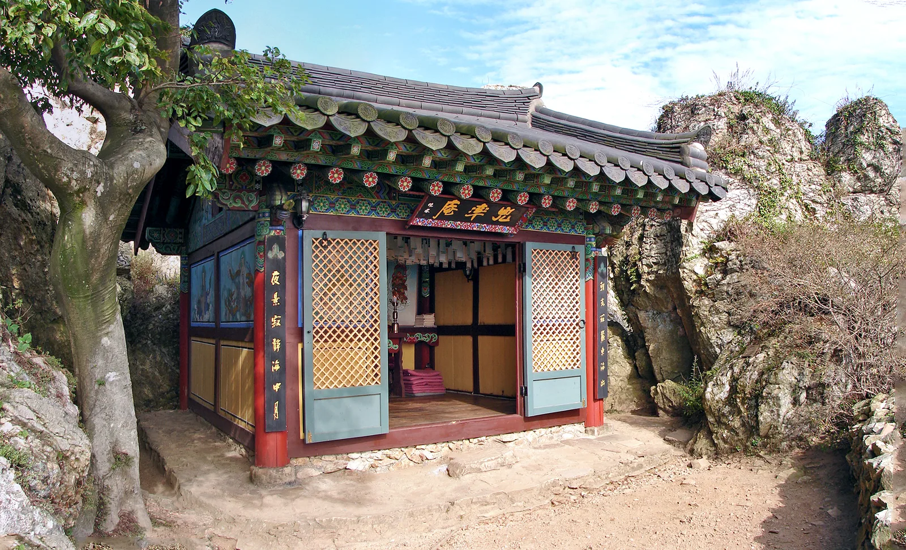
▲ 달마산 능선의 바위 봉우리 사이, 석축 위에 들어앉은 도솔암 법당(2011년 10월 촬영) 사진=Wikimedia Commons (steve46814, CC BY-SA 3.0)
1. 왜 가볼 만한가 — 달마산 12암자 중 유일하게 되살아난 곳
도솔암은 전남 해남군 송지면 마봉리, 달마산 능선의 도솔봉 바위 봉우리 사이에 들어앉은 작은 암자다. 대한불교조계종 제22교구 본사 대흥사의 말사로, 『신증동국여지승람』에 따르면 통일신라 때 의상대사가 창건했다고 전한다. 정유재란 때 퇴각하던 왜군이 불을 질러 소실된 뒤 수백 년 동안 터만 남아 있다가, 2002년 월정사에 있던 법조 스님이 법당을 다시 세웠다. 한국관광공사 자료에 따르면 단청까지 32일 만에 마친 불사였다. 디지털해남문화대전은 법당이 2002년 6월 8일 복원됐고 2006년 삼성각이 더해졌다고 기록한다. 한때 달마산에 있었다는 12개 암자 가운데 지금 모습으로 되살아난 곳은 도솔암이 유일하다.
도솔암이 특별한 이유는 '자리'에 있다. 바위와 바위 사이 좁은 틈에 석축을 쌓고 그 위에 법당 한 채를 얹었는데, 대한민국 구석구석은 이곳을 해남8경 가운데 으뜸으로 소개한다. 석축 끝에 서면 서남해 다도해가 발아래 펼쳐지고, 일출과 일몰을 모두 볼 수 있는 위치여서 사진가들이 꾸준히 찾는다. 드라마 촬영지로도 알려졌는데, 한국관광공사 대한민국 구석구석 기사에는 '추노', '각시탈', '내 여자친구는 구미호'가 이곳에서 촬영된 것으로 소개돼 있다. 입장료는 없고 연중 개방된다.
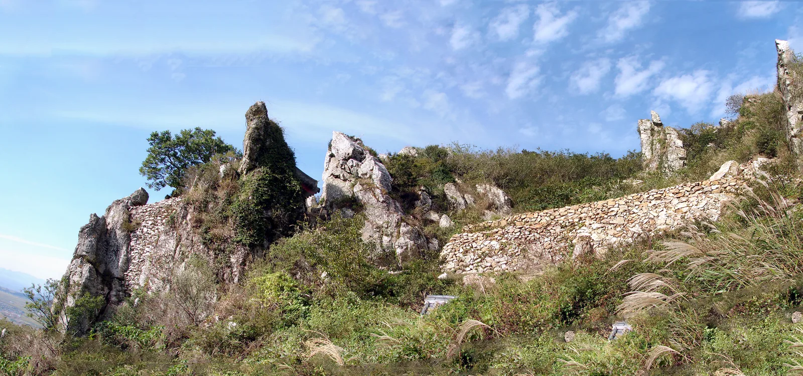
▲ 도솔암 주변 능선. 회색 바위 봉우리가 톱니처럼 이어지고, 그 사이로 돌을 쌓은 석축이 보인다 사진=Wikimedia Commons (steve46814, CC BY-SA 3.0)
2. 가는 법과 주차 — 임도 3km, '한 대 폭'을 전제로 운전하라
도솔암은 차로 암자 바로 아래까지 갈 수 없다. 차량은 달마산 중턱의 작은 주차 공간까지만 올라가고, 거기서부터는 걸어야 한다. 대한민국 구석구석에 따르면 송지면 마봉리 마련마을에서 구불구불한 산길을 약 3km 올라가면 도솔봉 입구에 닿는다. 또 다른 구석구석 기사는 이 길을 "차 한 대 너비의 임도"로 묘사했다. 주차 규모는 공식 수치가 없다. 한국관광공사 관광정보(열린관광 모두의 여행)에는 주차 '가능', 연중무휴·상시 개방으로만 나와 있고 주차 가능 대수는 공개돼 있지 않다. 임도 끝 공간이 넓지 않다는 점은 여러 소개 자료가 공통으로 전하는 만큼, 주말·단풍철에는 자리가 없을 수 있다고 보고 움직이는 편이 안전하다. 현재 주차 여건은 해남군 관광 안내(061-532-1330)나 해남군 문화예술과 문화유산팀(061-530-5250)에 문의할 수 있다.
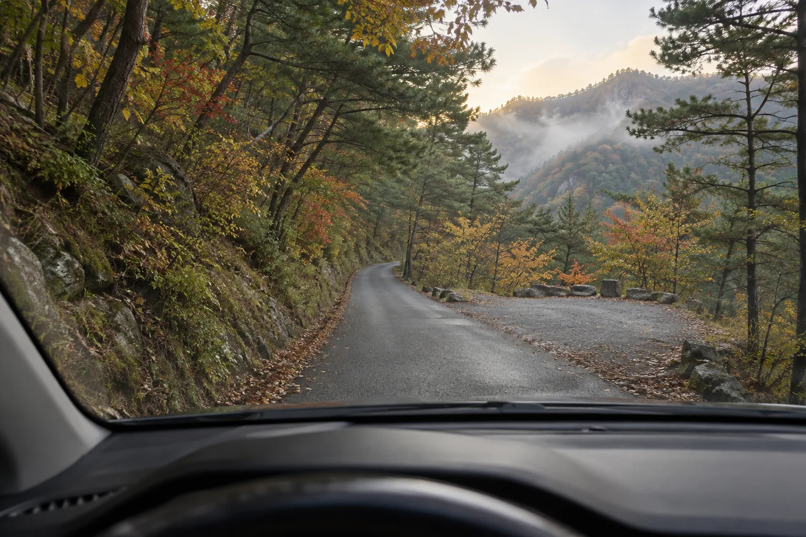
▲ 중앙선 없는 1차로 산길. 앞쪽 오른편처럼 길이 넓어지는 곳이 맞은편 차를 비켜 주는 지점이 된다 이미지=AI 생성
운전자 입장에서 이 길의 핵심은 교행이다. 차 한 대 폭 구간에서 맞은편 차를 만나면 둘 중 하나는 후진해 넓은 곳까지 물러나야 한다. 다음을 기억해 두자.
| 상황 | 이렇게 하자 |
|---|---|
| 진입 전 | 마련마을 쪽에서 임도로 들어서기 전, 주말·연휴라면 주차 공간이 이미 찼을 가능성을 염두에 둔다. 무리해서 올라갔다가 되돌아 내려오는 차와 엉키는 경우가 가장 곤란하다 |
| 오르막 주행 | 저단 기어로 천천히. 굽은 길 앞에서는 속도를 충분히 줄이고, 필요하면 짧게 경적을 울려 존재를 알린다 |
| 맞은편 차량 | 지나온 길 중 가장 가까운 넓은 지점이 어느 쪽인지 따져 가까운 쪽이 물러난다. 도로교통법상 비탈진 좁은 도로에서는 올라가는 차가 비켜 주는 것이 원칙이지만, 실제로는 비킬 공간이 가까운 쪽이 움직이는 것이 현실적이다 |
| 내리막 | 풋브레이크만 계속 밟지 말고 엔진브레이크를 쓴다. 낙엽이 쌓인 가을철 노면은 미끄럽다 |
| 차종 | 대형 SUV·승합차는 교행과 회차가 더 까다롭다. 차폭이 큰 차라면 미황사에 차를 두고 걸어 오르는 방법도 고려할 만하다 |
| 야간·새벽 | 일출을 보러 어두울 때 오를 경우 가로등이 없다는 전제로 하향등·안개등을 켜고 더 천천히 |
내비게이션에는 도솔암 주소(송지면 마봉송종길 355-300)나 '도솔암 주차장'을 입력하면 된다. 미황사 쪽에서 출발하면 차로 약 13km, 15분 남짓 걸린다고 구석구석은 안내한다. 산 위에서는 휴대전화 신호가 약할 수 있으니 경로는 출발 전에 미리 받아 두는 편이 좋다.
3. 주차장에서 암자까지 — 800m 산길과 바위 틈 돌계단
주차 후 도솔암까지는 약 800m 산길이다. 대한민국 구석구석 기사들은 소요 시간을 15분(2019년 기사)에서 20~30분(2014년 기사)으로 소개한다. 경사가 심하지는 않지만 흙길과 바윗길이 섞여 있으니 운동화 이상의 신발을 권한다. 휠체어나 유모차로는 사실상 오르기 어려운 산길이라는 점도 감안해야 한다.
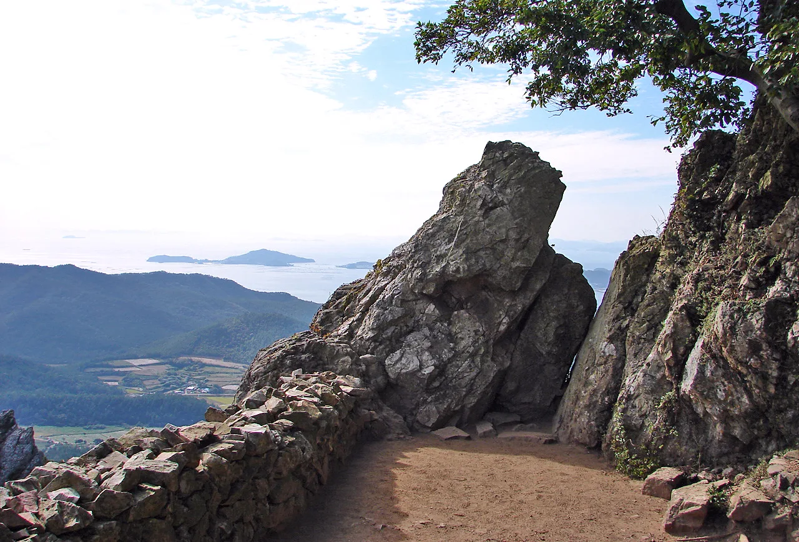
▲ 도솔암으로 이어지는 바위 사이 길. 돌담 너머로 섬이 흩어진 바다가 보인다 사진=Wikimedia Commons (steve46814, CC BY-SA 3.0)
길 끝에 가까워지면 거대한 바위 두 개가 문처럼 서 있고, 그 사이로 난 돌계단을 오르면 법당 지붕이 먼저 눈에 들어온다. 암자 마당은 몇 사람만 서도 꽉 차는 크기다. 법당 앞은 수행 공간이기도 하므로 큰 소리로 떠들거나 법당 안을 무단으로 촬영하는 일은 삼가자. 삼성각은 법당 아래쪽 바위 틈에 따로 자리한다.
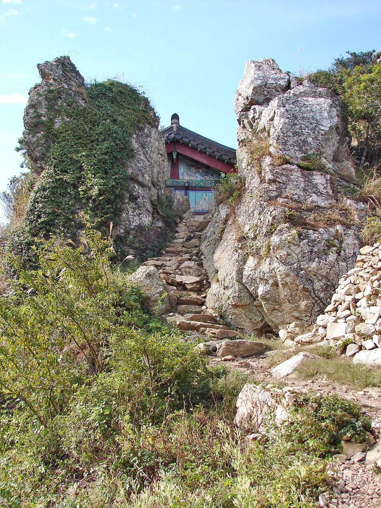
▲ 거대한 바위 사이로 이어지는 돌계단. 계단 위로 도솔암 법당 지붕이 살짝 보인다 사진=Wikimedia Commons (steve46814, CC BY-SA 3.0)
🚶 미황사에서 걸어 오르는 방법도 있다
임도 운전이 부담스럽다면 미황사에 차를 두고 걸어서 도솔암까지 가는 방법이 있다. 구석구석 기사 기준 미황사에서 걸어서 약 1시간이다. 달마고도 4코스(해탈길) 구간에서도 도솔암 방향 경관을 볼 수 있다. 다만 능선 산길이므로 등산화와 물, 여유 있는 하산 시간 확보는 필수다.
4. 미황사와 달마고도 — 한반도 육지 최남단 절에서 시작하는 17.74km
미황사(해남군 송지면 미황사길 164, 061-533-3521)는 신라 경덕왕 8년(749년)에 창건된 것으로 전하는 절로, 한반도 육지의 가장 남쪽에 자리한 사찰로 소개된다. 해발 489m 달마산 서쪽 비탈에 기대어 있어, 절 마당에 서면 대웅보전 지붕 너머로 바위 능선이 병풍처럼 펼쳐진다. 달마산이 '남도의 금강산'으로 불리는 이유를 이 자리에서 실감할 수 있다. 대웅보전과 응진당은 보물로 지정돼 있고, 대웅보전 주춧돌에는 거북·게 같은 바다 생물이 새겨져 있다. 서해로 지는 해와 달마산 암릉이 어우러지는 일몰 풍경도 유명하며, 드라마 '박하경 여행기' 촬영지로 다시 주목받았다.
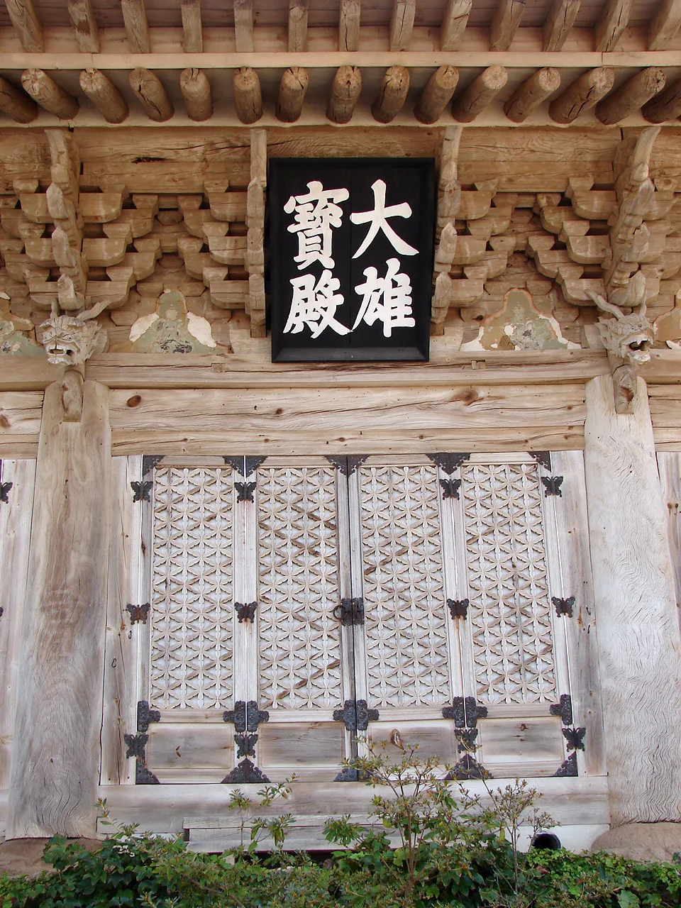
▲ 미황사 대웅보전 정면. 단청이 바랜 나무 결과 꽃살문이 그대로 드러난다(2011년 10월 촬영) 사진=Wikimedia Commons (Steve46814, CC BY-SA 3.0)
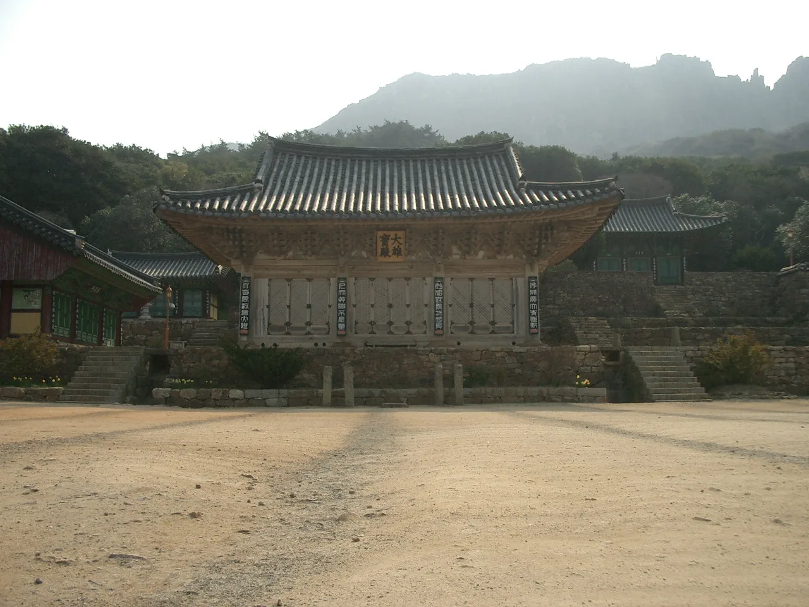
▲ 미황사 마당과 대웅보전, 뒤편으로 이어지는 달마산 바위 능선 사진=Wikimedia Commons (Fred Ojardias, CC BY 2.0)
달마고도는 미황사를 출발해 달마산 주 능선 허리를 한 바퀴 돌아 다시 미황사로 돌아오는 17.74km 순환 길이다. 미황사 금강 스님의 구상에서 출발해 전라남도·해남군의 지원으로 약 2년간 조성, 2017년 11월 18일 개통했다. 디지털해남문화대전에 따르면 공사는 2017년 1월부터 10월까지 이어졌고, 기계를 쓰지 않고 연인원 약 1만 명의 사람 손으로만 돌을 하나하나 놓아 길을 닦았다. 해발 220~380m 사이를 오가며 편백·소나무 숲, 너덜지대, 남해와 서해 조망, 옛 암자 터를 지난다. 해남군 문화관광이 안내하는 코스는 다음과 같다.
| 코스 | 구간 | 거리 | 소요 시간 | 특징 |
|---|---|---|---|---|
| 1코스 출가길 | 미황사 → 큰바람재 | 2.71km | 약 50분 | 가장 많이 찾는 구간, 산지습지·너덜바위 |
| 2코스 수행길 | 큰바람재 → 노지랑골 | 4.37km | 약 1시간 50분 | 소사나무·음나무 군락 |
| 3코스 고행길 | 노지랑골 → 몰고리재 | 5.63km | 약 2시간 10분 | 다도해 조망이 가장 좋은 구간 |
| 4코스 해탈길 | 몰고리재 → 미황사 | 5.03km | 약 1시간 40분 | 편백 숲, 도솔암, 미황사 부도전 |
| 합계 | 17.74km | 약 6시간 30분 | 출발·도착 모두 미황사 | |
순환 코스라 차를 미황사에 두고 출발해 같은 자리로 돌아오면 되므로 자가용 여행자에게 특히 편하다. 전 구간이 부담스럽다면 1코스만 걸어 큰바람재에서 되돌아오는 왕복(약 5.4km)이 무난하다. 해남군은 스탬프 투어와 정기 걷기 행사도 운영하니 일정은 해남군 문화관광 홈페이지에서 확인하자. 코스별 거리는 자료마다 조금씩 다르다(디지털해남문화대전은 1코스 2.72km, 2코스 4.3km로 적는다). 표는 해남군 문화관광 안내를 따랐고, 코스별 시간을 더한 6시간 30분은 쉬는 시간을 뺀 걷기 시간이므로 실제로는 여유를 더 잡는 편이 좋다.
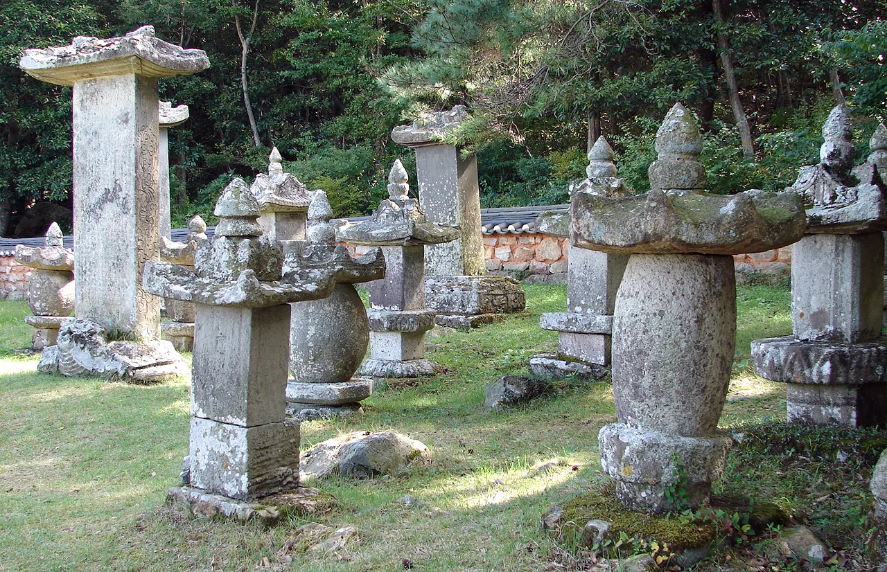
▲ 달마고도 4코스 끝자락에서 만나는 미황사 부도전. 이끼 낀 부도와 비석이 숲속 풀밭에 모여 있다(2011년 10월 촬영) 사진=Wikimedia Commons (steve46814, CC BY-SA 3.0)
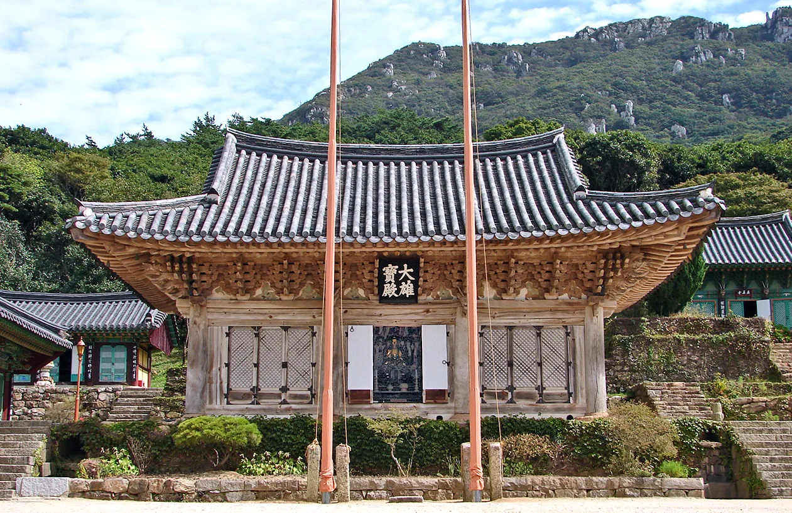
▲ 미황사 경내 전각 뒤로 펼쳐진 달마산 암릉. 달마고도는 이 능선의 허리를 한 바퀴 돈다 사진=Wikimedia Commons (Steve46814, CC BY-SA 3.0)
5. 가을 방문 팁 — 일출·일몰 시간, 운해를 노린다면
도솔암은 동쪽과 서쪽이 모두 트여 있어 일출과 일몰을 한 자리에서 볼 수 있다. 서쪽으로는 어불도와 진도 방향 바다 위로 해가 지는 풍경이 대표적이다. 한국천문연구원 천문우주지식정보가 발표한 2026년 '해남' 지점의 해 뜨고 지는 시각은 아래와 같다. 이 값은 해남 지점 좌표(북위 34°34′·동경 126°36′) 기준이며 지형을 고려하지 않은 계산값이라, 산 능선에서 실제로 해가 보이는 시각은 바다 쪽 지평선과 주변 봉우리에 따라 몇 분 차이가 날 수 있다.
| 날짜 | 시민박명 시작 | 일출 | 일몰 | 시민박명 끝 |
|---|---|---|---|---|
| 10월 1일 | 06:03 | 06:28 | 18:18 | 18:43 |
| 10월 15일 | 06:13 | 06:39 | 18:00 | 18:25 |
| 10월 31일 | 06:27 | 06:53 | 17:41 | 18:07 |
| 11월 15일 | 06:40 | 07:07 | 17:29 | 17:56 |
| 11월 30일 | 06:53 | 07:21 | 17:23 | 17:51 |
'시민박명'은 해가 지평선 아래 6° 이내에 있어 조명 없이도 사물을 알아볼 수 있는 시간대다. 일출 20~30분 전부터 하늘이 붉어지기 시작하므로 여명 사진을 노린다면 시민박명 시작 전에 석축에 도착해 있는 것이 좋다. 반대로 일몰 후 시민박명이 끝나면 산길은 금방 캄캄해진다. 다른 날짜는 한국천문연구원 천문우주지식정보(astro.kasi.re.kr)의 '월별 해/달 출몰시각'에서 '해남'을 골라 확인할 수 있다.
일출을 보려면 주차 후 걷는 시간(15~30분)과 어두운 임도 운전 시간을 더해 일출 1시간 전쯤 마련마을 입구에 도착하는 일정이 현실적이다. 헤드랜턴이나 손전등은 필수다. 일몰을 본 뒤에는 금방 어두워지므로, 해가 진 직후 바로 하산을 시작해 임도를 내려오는 편이 안전하다.
운해(구름바다)는 밤사이 맑고 바람이 약해 기온이 크게 떨어진 새벽, 낮은 골짜기에 안개가 고일 때 잘 생기는 현상이다. 일교차가 커지는 가을이 유리한 계절이지만, 날씨에 따라 만나지 못하는 날이 더 많다는 점은 감안해야 한다. 전날 밤 일기예보에서 맑음·약한 바람, 큰 일교차를 확인하고 나서면 확률을 높일 수 있다.
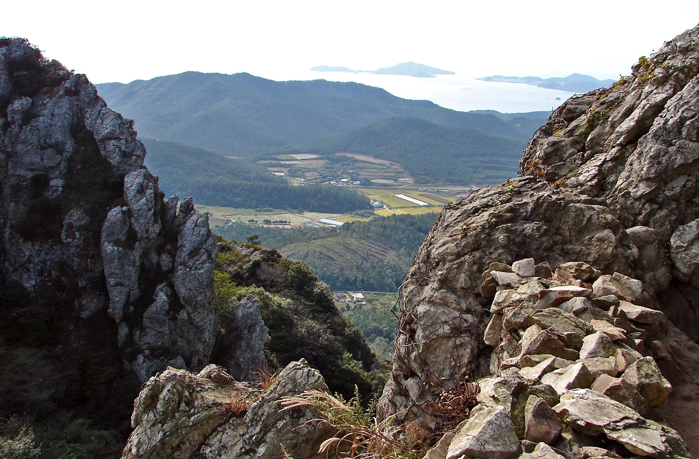
▲ 도솔암 부근 바위 틈으로 내려다본 들판과 다도해. 새벽에 골짜기로 안개가 고이면 이 풍경이 구름 아래로 잠긴다 사진=Wikimedia Commons (steve46814, CC BY-SA 3.0)
가을에는 달마산 능선의 단풍과 억새가 더해지고, 주말 낮 시간대에는 도솔암 주차 공간이 빠르게 찰 수 있다. 차로 올라갈 계획이라면 평일이나 이른 오전을 노리는 편이 교행 스트레스도 적다. 산 위는 해안 바람이 강해 아래보다 체감 온도가 낮으니 얇은 방풍 재킷을 챙기자.
6. 주변 연계 코스 — 땅끝과 대흥사를 하루에 묶는 법
땅끝관광지는 도솔암·미황사와 같은 송지면에 있어 동선을 묶기 좋다. 한반도 육지 최남단을 상징하는 땅끝탑과 땅끝전망대가 있고, 선착장이나 모노레일 매표소 주변에 차를 두고 해안 산책로로 이동하면 된다. 가을 팁이 하나 있다. 대한민국 구석구석에 따르면 땅끝 앞바다의 맴섬 두 바위 사이로 해가 떠오르는 장면은 2월과 10월에 열흘 정도만 볼 수 있다. 10월 여행이라면 첫날 새벽은 맴섬 일출, 둘째 날 새벽은 도솔암 일출처럼 나눠 잡아 볼 만하다.
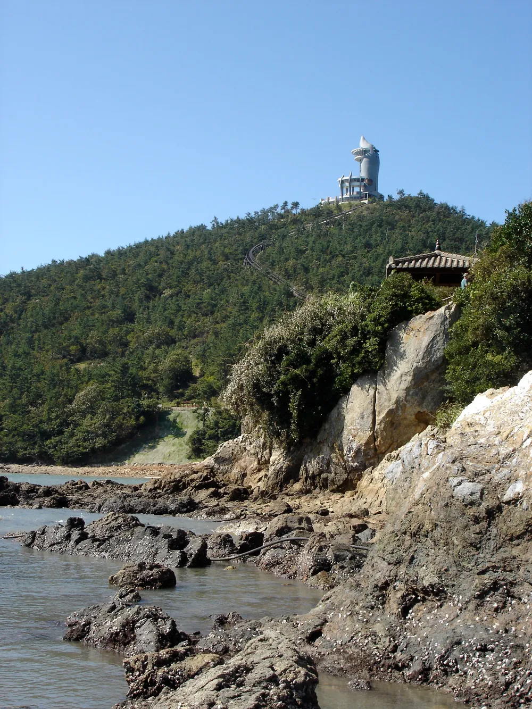
▲ 갯바위 너머 언덕 위에 선 땅끝전망대(2007년 촬영). 현재 모습과는 다를 수 있다 사진=Wikimedia Commons (Matt and Nayoung Wilson, CC BY 2.0)
대흥사는 두륜산 도립공원 안에 있는 대사찰로, 도솔암이 속한 조계종 제22교구 본사다. 2018년 '산사, 한국의 산지승원' 7개 사찰 가운데 하나로 유네스코 세계유산에 등재됐다. 땅끝·송지 쪽에서 해남읍 방향으로 올라가는 길에 들르기 좋으며, 도립공원 입장료와 주차 요금은 방문 전 확인이 필요하다.
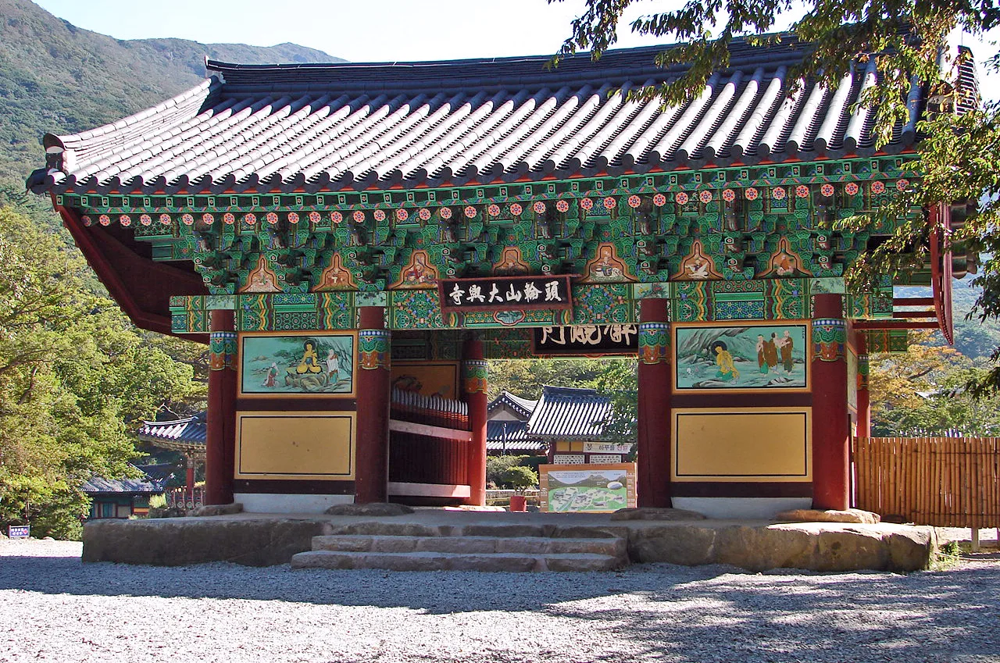
▲ 두륜산 대흥사 경내의 단청 입힌 전각 사진=Wikimedia Commons (Steve46814, CC BY-SA 3.0)
해남까지 내려왔다면 인근 남도 여행지와 이어 보는 것도 방법이다. 해남 우수영과 진도를 잇는 울돌목 일대는 CarPrism의 명량대첩축제 가이드에서, 땅끝 너머 섬 여행은 완도 청산도 슬로시티 가이드에서 자세히 다뤘다.
하루 코스로 정리하면 이렇다. 새벽 도솔암 일출 → 미황사 아침 참배와 달마고도 1코스 왕복(약 2시간) → 점심 → 땅끝관광지 산책 → 해남읍 방향으로 올라가며 대흥사. 이틀 일정이라면 둘째 날을 달마고도 전 구간(약 6시간 30분)에 통째로 쓰는 것도 좋다.
7. 방문 전 체크리스트
✅ 출발 전 확인할 것
· 도솔암 임도는 차 한 대 너비 구간이 많다 — 교행 시 후진 각오, 대형차는 미황사 주차 후 도보 고려
· 임도 끝 주차 공간은 협소 — 주말·단풍철엔 평일이나 이른 시간 방문, 현재 주차 여건은 해남군 관광 안내(061-532-1330)로 확인
· 주차 후 약 800m, 15~30분 산길 — 운동화 이상, 일출·일몰 땐 손전등
· 달마고도는 17.74km·약 6시간 30분 — 물·간식, 해 지기 전 하산 계획
· 미황사 템플스테이·달마고도 걷기 행사 일정은 공식 홈페이지에서 최종 확인
· 산 위는 바람이 강하다 — 방풍 재킷 준비
· 도솔암은 수행 공간 — 법당 안 촬영·소음 자제